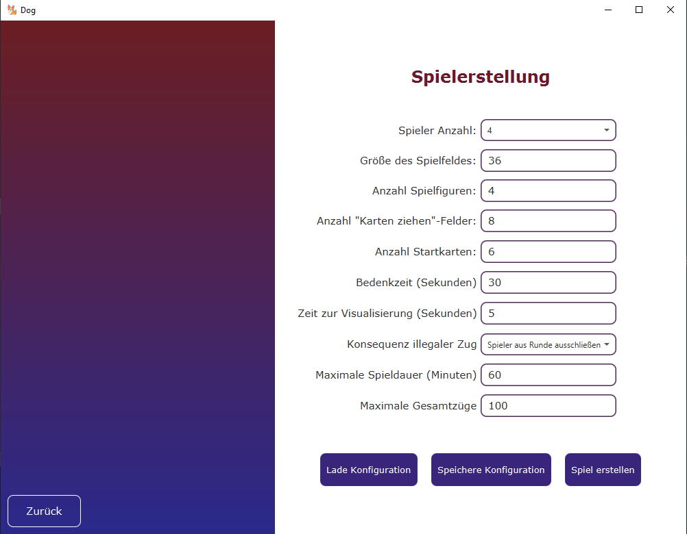

- Beobachter
- -laufenden Spielen zusehen
- Spieler
- -beitreten, spielen oder beobachten
- Anmeldename(required)
- -wird anderen angezeigt max 13 Zeichen
- Ip-Adresse(optional)
- -konfiguriert der Ausrichter
- Port(optional)
- -konfiguriert der Ausrichter
- Anmelden
- -Weiterleitung zur Lobby
- Zur Website
- -Hier sind wir :)
Dog Online Lobby

- Ip-Adresse(oben links)
- -entweder localhost oder die eingegebene Ip-Adresse
- Port(oben links)
- -entweder localhost oder der eingegebene Port
- Abgeschlossen
- -Hier werden die fertig gespielten Spiele angezeigt, bei denen wird das Endscoreboard angezeigt
- Laufend
- -Hier werden alle laufenden Spiele angezeigt, denen man nur als Beobachter joinen kann
- Startend
- -Hier werden alle startenden Spiele angezeigt, denen man als Spieler oder Beobachter joinen kann
- Verbleibende Spielzeit
- -Hier wird die verbleibende Spielzeit angezeigt von dem ausgewählten Spiel
- Spieleranzahl
- -Hier wird die maximale Anzahl an Spielern, die dem Spiel als Spieler beitreten können, angezeigt
- Log-Out-Button(unten links)
- -gehe zurück zum Anmeldebildschirm
Dog Online Ausrichter

- Spieler Anzahl
- - Definiere wie viele Spieler das Spiel fassen kann, mindestens: 2, maximal:6
- Größe des Spielfeldes
- Standardwerte: 2P(),3P(),4P(36),5P(),6P(),beliebig viele wählbar
- Anzahl Spielfiguren
- Standardwert:4,aber beliebig viele wählbar
- Anzahl Karten ziehen Felder
- Standardwert:8
- Anzahl Startkarten
- Standardwert:
- Bedenkzeit (Sekunden)
- Standardwert:
- Zeit zur Visualisierung
- Standardwert:
- Konsequenz illegaler Zug
- Standardwert:
- Maximale Spieldauer
- Standardwert:
- Maximale Gesamtzüge
- Standardwert:
- Lade Konfiguration
- Lädt eine gespeicherte Konfiguration eines Spiels
- Speichere Konfiguration
- Speichert eine gespeicherte Konfiguration eines Spiels
- Spiel erstellen
- solange keine Fehler auftreten, wird das Spiel so erstellt
und anschließend können Spieler dem Spiel hinzugefügt werden - Zurück
- gehe zurück zum Anmeldebildschirm